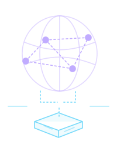

Lezione 2.1 · Interfacce seriali
Dalla rete locale al canale fisico
Un file parte da una sede. Chi consegna i bit alla linea e chi decide quando leggerli?

In questa lezione
Riconosci DTE e DCE, distingui dati, clock e controllo, e individua il primo controllo quando un collegamento seriale non parte.
Dal file al segnale
Segui i dati su un collegamento fra due sedi.
Il PC prepara il file. Il router A lo riceve dalla LAN e inoltra i dati sulla porta WAN. Sul tratto seriale è il DTE (apparato terminale dei dati). Il modem A svolge il ruolo di DCE (apparato di terminazione del circuito dati): adatta i dati al mezzo fisico. Al lato opposto il modem B recupera i dati e li consegna al router B.
I ruoli descrivono i due lati di una specifica interfaccia. Lo stesso apparato può svolgere ruoli diversi su porte diverse. Il cavo è il mezzo, mentre gli apparati elaborano o adattano il segnale.
Chi scandisce il tempo?
Sul filo arrivano segnali. Il ricevitore deve sapere in quale istante campionare ciascun bit.
In un’interfaccia sincrona il clock scandisce il tempo. Nel nostro schema il DCE fornisce il riferimento al DTE. TXD trasporta i dati in uscita dal DTE e RXD quelli in entrata. I due nomi si leggono dal punto di vista del DTE.
Una console seriale RS-232 asincrona usa un accordo su velocità e formato. Il bit di start dà inizio al carattere e il bit di stop ne marca la fine. In formato 8N1 si inviano 8 bit di dati, nessuna parità e un bit di stop, oltre allo start. Ogni carattere occupa quindi 10 bit sulla linea.
Il dialogo prima dell’invio
Dati, sincronismo e segnali di controllo rispondono a domande diverse.
- RTSDTE → DCE
- CTSDCE → DTE
- TXDDTE → DCE
- RTS / CTS
- Nel collegamento dell’esempio, il DTE chiede di inviare con RTS. Il DCE lo autorizza con CTS.
- DTR / DSR
- DTR indica che il terminale è pronto. DSR indica che l’apparato di linea è pronto.
- DCD
- Il modem indica di aver rilevato la portante remota.
Se osservi RTS attivo e CTS assente, controlla la disponibilità del modem e i fili di controllo. Se manca il clock su una porta sincrona, controlla prima chi deve fornirlo.
RS-232, V.35 e cavo null modem
Parti dal tipo di porta e dal ruolo degli apparati.
- Terminale ATX → RX di B
- Terminale BTX → RX di A
Una console RS-232 è un esempio di seriale asincrona. V.35 è un’interfaccia seriale storica, usata anche tra router e apparato di linea in WAN sincrone. Una porta WAN Ethernet è un altro tipo di collegamento e segue le proprie regole.
Se colleghi due terminali RS-232 direttamente, un cavo null modem incrocia TX e RX. I fili dei segnali di controllo dipendono dal modo in cui i due apparati gestiscono il flusso. Con un modem, segui lo schema previsto per la coppia DTE–DCE.
Dal bit al carattere
Quanto tempo serve per inviare 480 byte su una console a 9.600 bit/s?
- 480 byte × 10 bit = 4.800 bit
- 4.800 bit ÷ 9.600 bit/s = 0,50 s
- Con 8N1 ogni byte richiede 1 bit di start + 8 di dati + 1 di stop = 10 bit.
- 480 byte richiedono 480 × 10 = 4.800 bit sulla linea.
- Dividi bit da inviare per bit al secondo: 4.800 ÷ 9.600 = 0,50 s senza pause.
La capacità utile è 9.600 × 8 ÷ 10 = 7.680 bit/s. Start e stop occupano una parte del tempo di trasmissione.
Collauda il collegamento seriale
La porta sincrona è collegata. I dati risultano illeggibili e il riferimento temporale è assente. Che cosa controlli per primo?
Controlla configurazione, cavo e uscita del clock sul DCE. Il ricevitore usa quel riferimento per scandire i bit.
Checkpoint
Cinque decisioni. Leggi il riscontro dopo ogni risposta e riprova quando vuoi.